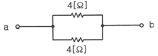

육상무선통신사 (2022-10-08 기출문제)
1과목: 전파법규
1. 무선설비의 위탁운용 또는 공동 사용하는 경우의 관련 조건으로 옳지 않은 것은?
- 이미 시설된 무선국의 운용에 지장을 주지 아니할 것
- 전파가 능률적으로 발사될 수 있는 곳에 설치할 것
- 공동사용계약서는 행정안전부장관의 사전 승인을 받을 것
- 무선설비로부터 발사되는 전파가 인근 주택가의 방송수신에 장애를 주지 아니할 것
(정답률: 88%)

2. 전파법령에 의한 기술자격검정에서 부정행위자는 해당검정 시행일로부터 몇 년간 응시자격이 정지되는가?
- 1년
- 2년
- 3년
- 4년
(정답률: 79%)
3. 다음 중 전파의 정의에 대한 설명으로 틀린 것은?
- 인공적인 유도로 공간에 퍼져나가는 전자파
- 국제전기통신연합이 정한 범위안의 주파수
- 3,000[GHz]이하의 주파수의 전자파
- 무선기술의 발달로 그 범위는 넓어질 예정이다.
(정답률: 77%)
4. 다음 중 고정업무·육상이동업무를 행하는 무선국 및 간이무선국의 호출방법은?
- 상대국의 호출명칭 3회 이하, “여기는” 1회, 자국의 호출명칭 1회
- 상대국의 호출명칭 2회 이하, “여기는” 1회, 자국의 호출명칭 1회
- 상대국의 호출명칭 3회 이하, “여기는” 1회, 자국의 호출명칭 2회
- 상대국의 호출명칭 2회 이하, “여기는” 1회, 자국의 호출명칭 2회
(정답률: 75%)
5. 다음 중 무선통신의 사용원칙에 해당되지 않는 것은?
- 사용하는 용어는 가능한 한 간명해야 한다.
- 전파발사 출처를 명확히 하여야 한다.
- 정확히 교신하여야 하고 오류를 인지할 때는 즉시 정정하여야 한다.
- 충분한 의사전달을 위하여 통신문에 구애 받지 말아야 한다.
(정답률: 93%)
6. 다음 통신업무 중 가장 우선순위인 것은?
- 조난·긴급·안전에 관한 통신
- 항공기의 항행과 운항에 관한 일반통신
- 선박의 항해·운항·필수품에 관한 통신
- 기상업무기관으로 보내는 기상관측 통보
(정답률: 96%)
7. 다음 중 송신설비의 안테나·급전선 등 고압전기를 통하는 장치는 사람이 보행하거나 생활하는 평면으로부터 얼마 이상 높이에 설치되어야 하는가?
- 1.5[m] 이상
- 2.5[m] 이상
- 3.5[m] 이상
- 5[m] 이상
(정답률: 72%)
8. 국내 전파행정의 주관청은 어디인가?
- 한국방송통신전파진흥원
- 과학기술정보통신부
- 중앙전파관리소
- 전파연구소
(정답률: 65%)
9. 다음 중 신고하고 개설할 수 있는 무선국은?
- 표준전계발생기·헤테르다인방식 주파수측정장치
- 측정용 소형발진기
- 전파천문업무를 하는 수신전용 무선기기
- 적합성평가를 받은 생활무선국용 무선기기
(정답률: 61%)
10. 전파법에 의한 안테나계의 조건이 아닌 것은?
- 안테나는 무선설비를 작동할 수 있는 최소안테나 이득을 가질 것
- 정합은 신호의 반사손실이 최소화되도록 할 것
- 지향성은 목표하는 방향을 벗어나지 않도록 안정적일 것
- 주 복사각도의 폭이 충분히 클 것
(정답률: 82%)
11. 다음 중 무선국 정기검사 시 성능검사에 해당하지 않는 것은?
- 주파수
- 점유주파수대폭
- 설치장소
- 안테나공급전력
(정답률: 84%)
12. 무선국의 준공검사 시 검사대상이 아닌 것은?
- 무선종사자의 무선설비 조작능력
- 무선종사자 자격의 적합 여부
- 무선종사자 정원배치기준의 적합 여부
- 무선설비의 기술기준 적합 여부
(정답률: 75%)
13. 다음 중 무선국의 검사업무를 담당하는 기관은?
- 우정사업본부
- 한국전자통신연구원
- 한국방송통신전파진흥원
- 국립전파연구원
(정답률: 74%)
14. 다음 중 무선설비 등에서 발생하는 전자파가 인체에 미치는 영향을 고려하여 과학기술정보통신부장관이 고시하여야 할 사항이 아닌 것은?
- 전자파 적합성 평가기준
- 전자파 인체보호기준
- 전자파 강도 측정기준
- 전자파 흡수율 측정기준
(정답률: 53%)
15. 다음 중 무선국의 허가를 취소할 수 있는 경우에 해당하는 것은?
- 정당한 사유 없이 계속하여 6개월 이상 무선국의 운용을 휴지한 경우
- 무선종사자를 무선국에 배치하지 않는 경우
- 무선국 검사수수료를 연체한 경우
- 무선설비를 안전시설기준에 따라 설치하지 않은 경우
(정답률: 79%)
16. 비상국의 전원은 수동발전기, 원동발전기, 무정전전원장치 또는 축전지로서 몇 시간 이상 상시 운용할 수 있어야 하는가?
- 24시간
- 12시간
- 6시간
- 3시간
(정답률: 90%)
17. 무선설비의 운용을 위한 전원은 전압변동률이 정격전압의 몇 퍼센트 이내로 유지할 수 있어야 하는가?
- ±20[%]
- ±10[%]
- ±5[%]
- ±2[%]
(정답률: 86%)
18. 다음 중 국제전기통신연합의 임무가 아닌 것은?
- 국가간 무선국간 유해한 혼신을 피하기 위한 주파수 스펙트럼의 배분
- 상호협력을 통한 회원국의 경제적 발전
- 전기통신업무의 협력을 통하여 인명의 안전 확보
- 범세계적인 전기통신 표준화 촉진
(정답률: 80%)
19. 과학기술정보통신부장관이 전파자원을 확보하기 위하여 마련하고 시행하여야 할 시책으로 틀린 것은?
- 새로운 주파수의 이용기술 개발
- 이용 중인 주파수의 이용효율 향상
- 주파수의 국가등록
- 국가간 전파의 혼신을 없애고 방지하기 위한 협의·조정
(정답률: 65%)
20. 과학기술정보통신부장관이 적합성평가의 전부 또는 일부를 면제할 수 있는 경우로 틀린 것은?
- 시험·연구, 기술개발, 전시 등을 위하여 제조하거나 수입하는 방송통신기자재의 경우
- 국내에서 판매하지 아니하고 수출 전용으로 제조하는 방송통신기자재의 경우
- 「자동차관리법」에 따라 자가인증을 한 자동차의 경우
- 국내의 의료현장에서 사용할 목적으로 수입하는 의료기기의 경우
(정답률: 69%)
2과목: 기초전파공학
21. 1[W]의 전력을 데시벨로 환산하면 얼마인가?
- 10[dBm]
- 20[dBm]
- 30[dBm]
- 60[0]
(정답률: 54%)
22. 쿨롱의 법칙을 바르게 설명한 것은?
- 두 개의 자극사이에 발생하는 힘은 자극세기에 비례하고 거리에 반비례한다.
- 두 개의 자극사이에 발생하는 힘은 자극세기에 반비례하고 거리에 비례한다.
- 두 개의 자극사이에 발생하는 힘은 자극세기의 곱에 비례하고 거리의 제곱에 반비례한다.
- 두 개의 자극사이에 발생하는 힘은 자극세기의 곱에 반비례하고 거리의 제곱에 비례한다.
(정답률: 68%)
23. 2진법 10진 코드 “0110”을 10진수로 표시하면?
- 3
- 4
- 6
- 7
(정답률: 78%)
24. PCM(Pulse Code Modulation)의 진행 과정으로 올바른 것은?
- 부호화(Encoding) → 표본화(Sampling) → 양자화(Quantization)
- 양자화(Quantization) → 부호화(Encoding) → 표본화(Sampling)
- 양자화(Quantization) → 표본화(Sampling) → 부호화(Encoding)
- 표본화(Sampling) → 양자화(Quantization) → 부호화(Encoding)
(정답률: 53%)
25. 디지털주파수공용통신(TRS)의 특성으로 틀린 것은?
- 기본적으로 CDMA 접속방식을 사용한다.
- 단말기의 접속방식은 PTT(Press to Talk) 및 Dial로 사용한다.
- 기지국간 로밍(Roaming) 및 핸드오프(Hand Off)를 지원하여 광역서비스가 가능하다.
- 멀티서비스가 가능하게 구현되었다.
(정답률: 53%)
26. 다음 중 광섬유의 특징으로 틀린 것은?
- 누화나 혼신을 잘 일으키지 않는다.
- 불꽃이 나지 않으므로 화학 공장에서도 안심하고 사용할 수 있다.
- 가늘고, 가벼워 취급하기가 쉽다.
- 전송 손실이 매우 크다.
(정답률: 77%)
27. 다음 중 슈퍼헤테로다인 수신기의 검파회로에 주로 사용하는 검파방식은?
- 재생 검파
- 다이오드 검파
- 그리드 검파
- 플레이트 검파
(정답률: 66%)
28. 다음 중 레이다의 최대 탐지거리를 크게 하기 위한 방법이 아닌 것은?
- 송신전력을 크게 한다.
- 송신전파의 파장을 길게 한다.
- 송수신 안테나의 이득을 크게 한다.
- 수신기의 감도를 좋게 한다.
(정답률: 60%)
29. 과변조된 AM 전파를 수신하면 어떻게 되는가?
- 검파기가 과부하 된다.
- 음성신호 전력이 적다.
- 음성신호가 많이 찌그러져 들린다.
- 음성신호의 음질이 깨끗하게 잘 들린다.
(정답률: 76%)
30. 통신 중 무선송신기에서 갑자기 연기가 날 경우 가장 먼저 취할 조치는?
- 안테나 케이블을 절단한다.
- 송신을 하여 전파를 발사한다.
- 수신만 한다.
- 전원스위치를 끈다.
(정답률: 81%)
31. 다음과 같은 회로에서 a, b간의 합성저항 값은?

- 0.5[Ω]
- 1[Ω]
- 2[Ω]
- 4[Ω]
(정답률: 67%)
32. 다음 중 표준신호발생기가 갖추어야 할 조건에 해당되지 않는 것은?
- 넓은 범위에 걸쳐서 발진주파수가 가변일 것
- 발진주파수의 확도와 안정도가 양호할 것
- 출력레벨은 불가변이고 정확할 것
- 변조도가 정확히 조정될 것
(정답률: 55%)
33. 다음 중 오실로스코프로 측정하기에 적합하지 않은 것은?
- 주파수대역폭 측정
- 전압측정
- 두 신호의 시간값 측정
- 두 신호간의 위상차 측정
(정답률: 43%)
34. 다음 중 회로시험기로 측정할 수 없는 것은?
- 코일의 단선
- 축전지의 단자전압
- 콘덴서의 단락
- 가정용 220[V]의 전류
(정답률: 63%)
35. 다음 중 위성통신 지구국용 고이득 안테나로 적합한 것은?
- 카세그레인 안테나
- 야기 안테나
- 휩 안테나
- 다이폴 안테나
(정답률: 49%)
36. 다음 중 장중파용 안테나의 접지방식이 아닌 것은?
- 심굴접지
- 카운터포이즈
- 다중접지
- 유도접지
(정답률: 48%)
37. 초단파 전파의 전파특징에 관계 없는 것은?
- 가시거리내 통신에 적합하다.
- 지형등의 영향을 받기 쉽다.
- 대기의 영향을 받기 쉽다.
- 반사파를 주로 이용한다.
(정답률: 58%)
38. 국제전기통신연합이 정한 전파의 범위는 다음 중 어느 것인가?
- 300[GHz] 보다 낮은 주파수
- 3,000[GHz] 보다 낮은 주파수
- 30,000[GHz] 보다 낮은 주파수
- 300,000[GHz] 보다 낮은 주파수
(정답률: 75%)
39. 다음 중 통신용 전원장치가 갖추어야 할 조건으로 잘못된 것은?
- 충분한 용량을 가질 것
- 맥동률이 높을 것
- 예비전원이 구비될 것
- 전압변동률이 적을 것
(정답률: 75%)
40. 축전기 극판에 백색황산이 묻게 되는 원인이 아닌 것은?
- 장시간 방전상태로 방치했을 때
- 불충분한 충전횟수가 많을 때
- 전해액 부족으로 극판이 공기중에 노출되었을 때
- 자기방전이 적을 때
(정답률: 72%)
3과목: 통신보안
41. 다음 중 통신보안의 정의로 가장 적당한 것은?
- 통신정보를 얻기 위한 수단과 방법이다.
- 간접적으로 비인가자에게 누설되는 것이다.
- 통신수단에 의하여 비밀이 누설되는 것을 사전에 방지하는 것이다.
- 통신정보를 분석하고 수집하는 것이다.
(정답률: 81%)
42. 무선통신에서 통신보안이 필요한 요인으로 적절하지 않은 것은?
- 무선통신의 이용이 날로 증가되고 있기 때문이다.
- 무선통신이 도청하기 쉽기 때문이다.
- 통신이 풍부한 정보의 원천이 되기 때문이다.
- 이용하는 주파수가 높아지기 때문이다.
(정답률: 75%)
43. 통신운용의 3대 요소는?
- 신속성, 정확성, 현장성
- 신속성, 정확성, 안전성
- 안전성, 정확성, 공정성
- 신속성, 안전성, 친절성
(정답률: 79%)
44. 다음 중 비밀을 탐지하기에 가장 용이한 통신수단은?
- 전령통신
- 무선전화
- 등기우편
- 유선전화
(정답률: 70%)
45. 비밀누설의 주요 요인은?
- 보고체제의 일원화
- 과도한 통신소통
- 음어자재의 사용
- 전문의 사전통제
(정답률: 75%)
46. 다음 중 통신정보활동을 바르게 설명한 것은?
- 통신정보를 방어하기 위한 활동
- 통신내용의 도청을 저지하는 수단
- 누설된 정보 분석을 지연시키는 수단
- 통신내용을 수집·분석하여 유용한 정보를 생산
(정답률: 83%)
47. 다음 중 방향탐지에 대한 방어 수단으로 볼 수 없는 것은?
- 동일 위치에서 계속적인 전파발사의 억제
- 통신제원의 수시변경
- 과도한 송신출력의 제한
- 평문사용의 금지
(정답률: 67%)
48. 통신보안 교육기관으로 맞게 짝지어진 것은?
- 한국전파진흥협회, 중앙전파관리소
- 국립전파연구원, 중앙전파관리소
- 한국방송통신전파진흥원, 한국전파진흥협회
- 중앙전파관리소, 한국방송통신전파진흥원
(정답률: 50%)
49. 다음 중 “방해통신”을 가장 옳게 정의한 것은?
- 통신소통을 지연, 중단 또는 통신질서를 교란시킬 목적으로 통신망에 대해 혼신 및 잡음 등의 전파를 발사하는 행위
- 통신수단에 의하여 전달되는 비밀내용을 비닉할 목적으로 암호 기술상의 처리를 가한 통신문 내용을 분석하는 행위
- 통신소통과정에서 통신비밀이 누설되는 것을 방지하기 위하여 취해지는 제반 보호대책
- 통신소의 고유명칭 등 통신제원 및 교신량을 기술적으로 획득하기 위하여 혼신 및 잡음 등의 전파를 발사하는 행위
(정답률: 79%)
50. 다음 중 도청을 방지하려는 조치로 볼 수 있는 것은?
- 통신 제원을 장기간 유지한다.
- 통신사 개인특성을 노출한다.
- 보안장비를 설치 운용한다.
- 불필요한 전파를 계속 발사한다.
(정답률: 74%)